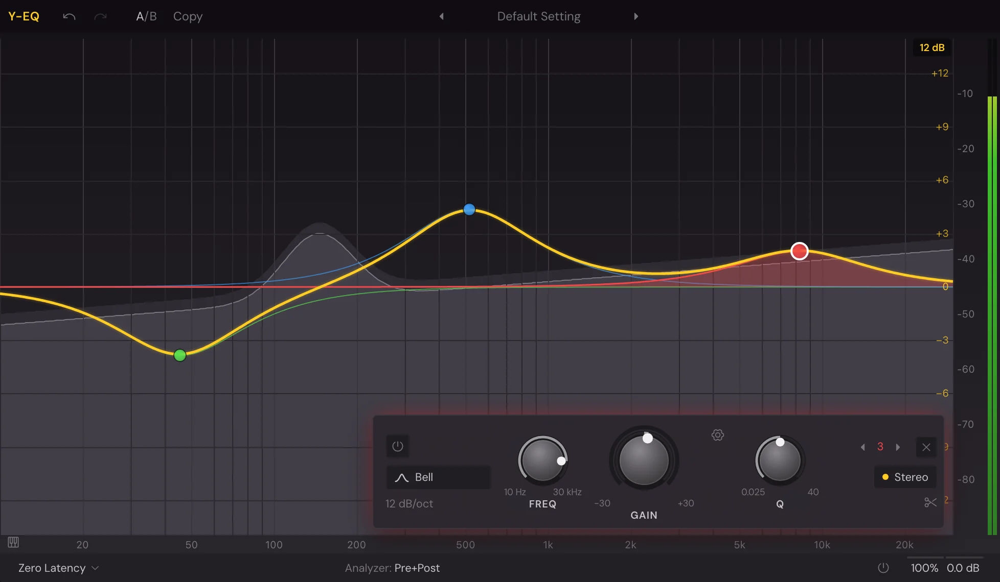

Mix
Y-EQ
Y-EQ is an equaliser you work on directly: drag a dot on the curve and the band moves, over a live analyser of the sound going through. Any band can turn dynamic, cutting or boosting only when the sound asks for it. It can also show another track's spectrum behind yours, so you can see where two sounds crowd each other.

Add a band
- Double-click the display to make a band where you clicked. Near the bottom you get a Notch; at the far left a Low Cut; at the far right a High Cut; anywhere else a Bell at that gain. ⌘-click works too.
- Drag the yellow curve to pull a new band out of it: a Bell, or a shelf at the very low or very high end.
- Hold ⌥ as you make a band to make it dynamic from the start.
Each band keeps its number and its colour, so you can tell them apart on the curve and in the controls.
Move bands on the display
| Gesture | What it does |
|---|---|
| Drag a dot | Moves its frequency (sideways) and gain (up and down). On a band with no gain, such as a cut or a notch, up and down sets its Q. |
| ⇧-drag | Fine moves. |
| ⌥-drag | Moves on one axis only. |
| ⌘-drag | Changes the band's Q. |
| Scroll over a dot | Changes its Q (scroll up narrows it). Add ⌘ for gain, ⌥ for the dynamic range, ⇧ for fine steps. |
| Click a dot | Selects it. ⌘-click adds it to the selection or takes it out; ⇧-click selects a run of bands. |
| Drag the background | Draws a box round the bands to select. ⇧ adds to the selection. A click on the background selects none. |
| ⌥-click a dot | Bypasses the band. |
| ⌘⌥-click a dot | Steps to the next shape. |
| ⌥⇧-click a dot | Steps to the next slope. |
| Double-click a dot | Lets you type its values. |
| Drag the ▲▼ handle | Sets a dynamic band's range. |
When several bands are selected, dragging one moves them all together.
With the window in front, Delete removes the selected bands, ⌘A selects every band and Esc selects none. Each drag is one step of undo.
Type a value
Rest the pointer by a band to see its values beside it: bypass, frequency, gain, Q and shape, with buttons to solo or delete the band. Double-click a value to type it, Tab to go to the next, Enter to finish. Frequencies take 440, 1k, 2.5k or a note (A4, C#3+13); gains take dB or a ratio (2x).
Solo a band
Hold the headphones button by a band to hear only what that band works on. While you hold it, drag sideways to move its frequency and up and down to change the level.
Band controls
Select a band and its controls appear under the display.
- Band power: bypasses the band.
- Shape: Bell, Low Shelf, Low Cut, High Shelf, High Cut, Notch, Band Pass, Tilt Shelf or Flat Tilt. With several bands of different shapes selected it reads (Multiple).
- Slope: how steep the band is, in dB per octave, up to Brickwall for cuts. The choices depend on the shape.
- FREQ: the band's frequency.
- GAIN: the band's boost or cut. On a dynamic band, a ring round the knob sets the range, and a yellow mark shows the gain it's using right now.
- Q: how wide the band is. Higher is narrower.
- Stereo placement: Stereo, Left, Right, Mid or Side: which part of the sound the band works on.
- Split (scissors): makes a copy of the band for each side, left and right or mid and side.
- The band's number, with arrows to step to the previous or next band, and × to delete it.
With several bands selected, the knobs move them all: frequencies together, gains in proportion.
The gear by Q holds Gain-Q interaction: a Bell narrows as you boost or cut it further. It applies to every band.
Knobs turn by dragging up and down (⇧ for fine) or scrolling. Double-click one to type a value; ⌘-click, ⌥-click or a middle click resets it. Right-click a knob for Reset, Type in value… and its automation (see Built-in effects).
Right-click a band
Right-click a dot for the band's menu: Shape, Slope, Stereo placement, Bypass or Enable, Make Dynamic or Clear Dynamics, Invert Gain, Split into Left and Right or Split into Mid and Side, Reset Placement, Gain-Q Interaction and Delete.
Dynamic bands
A dynamic band moves its gain with the sound: it cuts a harsh note only when it rings, or lifts a quiet part only while it's quiet. Make one with Make Dynamic, ⌥-scroll over a dot, or ⌥ as you make the band.
- Drag the ring round GAIN, or the ▲▼ handle on the display, to set how far the band can move.
- Threshold: where the band starts to act, with a level meter beside it. Auto sets the threshold for you; click it to set your own.
- SC: once you've set a threshold, the band listens to the slot's Sidechain input instead of its own sound. See Sidechain.
- Power button: bypasses the dynamics, leaving a static band.
- ×: clears the dynamics.
The display
The analyser runs behind the bands: the sound coming in as a darker fill, the sound going out as a lighter fill with a line. Each band draws its own curve in its colour, and the thick yellow line is all of them together.
- Display range (top right): ±3, ±6, ±12 or ±30 dB. It grows by itself to fit a band that goes further.
- Piano display (the keyboard button, bottom left): shows a keyboard in place of the frequency scale. Click a dot to tune its band to the nearest note; dragging then moves it a note at a time.
- The frequency scale: drag up or down on it to zoom, sideways to scroll. Double-click it to see the whole range again.
- The output meter stands at the right.
Analyzer settings
Click Analyzer in the bottom bar for its panel:
- Pre and Post: show the sound coming in, going out, or both.
- External spectrum: shows another Y-EQ's output, from another track, in red behind yours.
- Show Collisions: marks where this sound and the external spectrum crowd each other.
- Freeze: the spectrum stops falling and keeps its highest.
- Spectrum Grab: rest the pointer on the spectrum and its peaks are labelled; drag one to make a band there. A long press on the background keeps Spectrum Grab on until you click the background again.
- Range, Resolution, Speed and Tilt: how much the analyser shows, how finely, how fast it moves, and how much it tilts the picture (in dB per octave round 1 kHz; 4.5 shows it as the ear hears it).
EQ Match
EQ Match makes this sound's balance closer to another's.
- In the Analyzer panel, set External spectrum to the track you want to match, then click EQ Match to that track.
- Play the song. Y-EQ listens to both until it has heard a few seconds of each.
- Click Match. A white line shows the difference.
- Set how many Bands to use, then click Finish. The bands are added and selected, ready to adjust.
Output and processing
- Processing mode: Zero Latency, Natural Phase or Linear Phase, with a Linear Phase resolution from Low to Maximum. Linear Phase keeps the phase untouched at the cost of latency; the bottom bar says how late it plays. Dynamic bands play in Linear Phase only up to High: a warning shows if you go above it.
- Output (the button showing the mix and level): opens Phase (inverts the output), Auto Gain (keeps the level even as you boost or cut), Pan: L/R or M/S, the OUTPUT and PAN knobs, and Gain Scale, which scales every band's gain at once.
- Bypass: turns Y-EQ off, keeping its latency so nothing jumps out of time.
The top bar has Undo, Redo, A/B with Copy, and the preset menu with its arrows.
Presets
The presets are in folders: Mixing, Drums, Bass, Vocals, Effects and Mastering, plus Default Setting, Flat 7 Bands and Equalize at the top. A preset changes the bands and leaves your analyser settings alone. Once you change a band, the preset's name dims.
Automation
A single band's frequency, gain, Q and dynamic range can be automated, and so can the output level, pan and Gain Scale. Right-click a knob, or use Automate "…" in the title bar. See Automation.
Something here wrong or missing? Tell us.